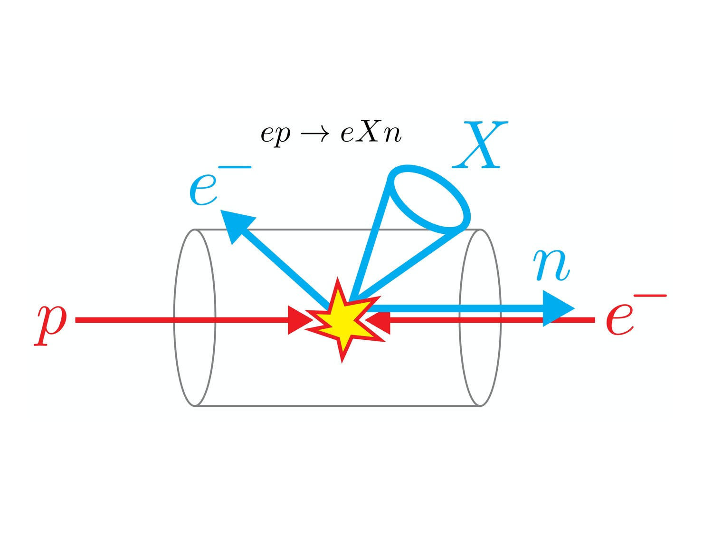
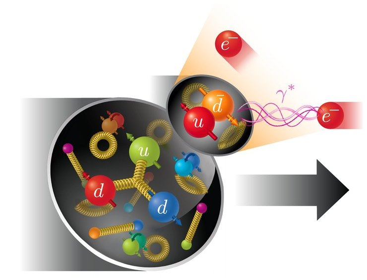
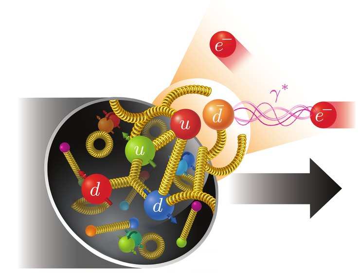
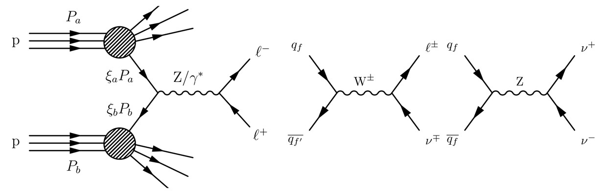
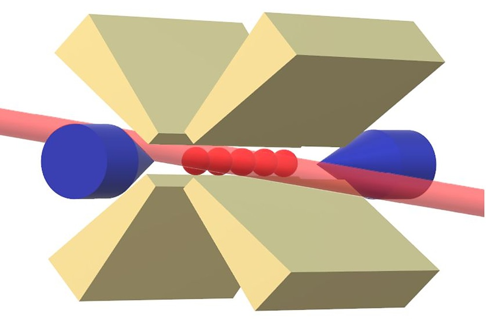
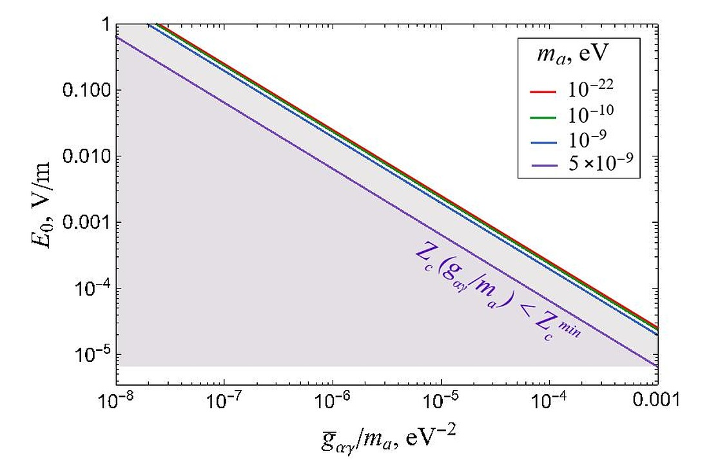
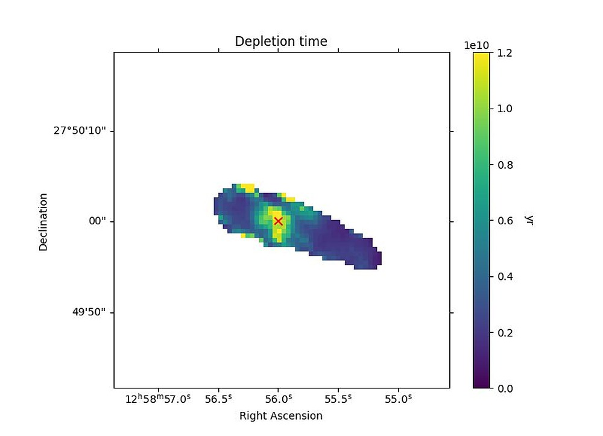
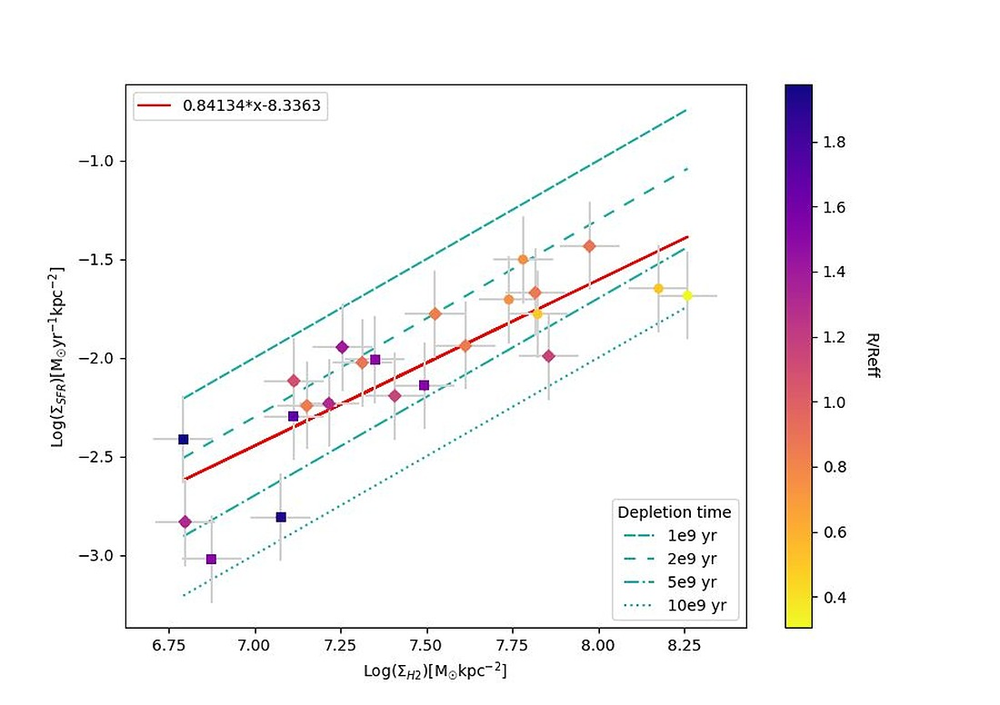
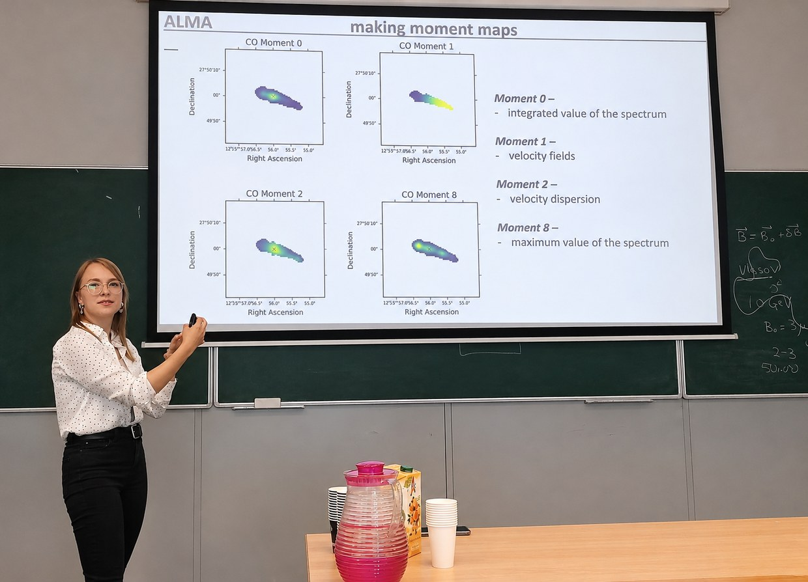

Research
Perturbative QCD, effective field theories, and the structure of hadrons
A proton is a bound state of quarks and gluons, but the theory that governs them — quantum chromodynamics — is notoriously hard to solve exactly. My research lives in the regime where it can be solved systematically: high-energy collisions, where the strong coupling is small and the problem can be factorized into pieces that are calculable in perturbation theory and pieces that must be measured. I use soft-collinear effective theory, factorization theorems, and higher-order perturbative calculations to make predictions for what colliders should see, and to work out what their measurements tell us about the inside of hadrons.
Forward neutrons at electron–proton colliders
When an electron scatters off a proton, the proton sometimes survives the collision as a neutron, continuing almost straight down the beam pipe while everything else is produced at larger angles. For decades the textbook explanation has been the Sullivan process: the proton fluctuates into a neutron plus a pion, and the electron scatters off the pion. It is a simple and appealing picture — it would let one measure the structure of the pion using a proton beam — but it is a model, not a consequence of QCD, and it struggles to describe the data in detail.
Together with Stella Schindler (Los Alamos National Laboratory) I am working out how this process looks from the point of view of QCD itself, using soft-collinear effective theory to derive a factorization framework for ep → eXn at small x. Part of the motivation is practical. Processes like this one, in which a proton or a fragment of it flies forward undisturbed, are called diffractive, and they will be a large fraction of the events at the Electron-Ion Collider now under construction at Brookhaven. Interpreting those events will need theory that can be improved systematically rather than models that cannot, and forward neutrons are a natural place to start building it.



The Sullivan picture: the proton emits a pion (a u d̄ pair) and the electron scatters off it.
In QCD the exchanged quark–antiquark pair remains tied to the rest of the proton by gluons.
I have talked about this work at the MIT EFT group meeting, in a seminar at Los Alamos, and in a lightning talk there; the slides are on the talks page.
Earlier work
Drell–Yan angular coefficients at NNLO
In the Drell–Yan process a quark and an antiquark annihilate into a lepton pair. The angular distribution of the leptons is described by a set of angular coefficients that encode the polarization of the intermediate gauge boson and are a sensitive test of perturbative QCD. For my master's thesis at the University of Amsterdam and Nikhef, supervised by Wouter Waalewijn and Johannes Michel, I carried out the fully analytic calculation of the Drell–Yan helicity cross sections and angular coefficients through O(αs2), including a helicity-resolved NNLO prediction for the transverse-momentum spectrum. The project started during the DESY Summer Student Program in Hamburg with Frank Tackmann, Alessandro Gavardi, and Bahman Dehnadi. The thesis received the 2025 KHMW Young Talent Award in theoretical physics.
M.Sc. thesis (PDF) · defense slides (PDF) · DESY summer student talk (PDF)


Axion detection with trapped ions
My bachelor's thesis (with Arghavan Safavi-Naini and Jordy de Vries) studied axion electrodynamics in Paul traps: an oscillating axion background induces a small displacement of a trapped ion, and I derived this displacement in terms of the axion parameters and estimated the region of parameter space that force-sensing experiments could reach. A follow-up summer project at the UvA Institute of Physics extended this to quantum trajectories, using master-equation and quantum-jump methods to look for ways to improve the sensitivity of ion-trap experiments.


B.Sc. defense slides (PDF) · quantum trajectories talk (PDF)
Star formation in jellyfish galaxies
During the LEAPS Summer Program at Leiden Observatory I worked with Ashley Bemis, Ian Roberts, and Sarah Leslie on molecular gas and star formation in jellyfish galaxies — galaxies being stripped of their gas as they fall into clusters — using ALMA and MaNGA observations. This work contributed to a paper in The Astrophysical Journal.



Other
Fermi acceleration in a chaotic billiard (with Anatoli Polkovnikov), and determining the masses of binary UV-active active galactic nuclei (with Anatoliy Tugay).
Publications
- I. D. Roberts, M. Lang, D. Trotsenko, et al., LoTSS Jellyfish Galaxies. IV. Enhanced Star Formation on the Leading Half of Cluster Galaxies and Gas Compression in IC3949, The Astrophysical Journal 941, 77 (2022). arXiv:2210.16013
Theses
- Complete Analytic Calculation of Drell–Yan Angular Coefficients at O(αs2), M.Sc. thesis, University of Amsterdam & Nikhef, 2025. PDF
- Measuring Oscillating Axion Fields Using Paul Traps, B.Sc. thesis, University of Amsterdam & Vrije Universiteit Amsterdam, 2023.